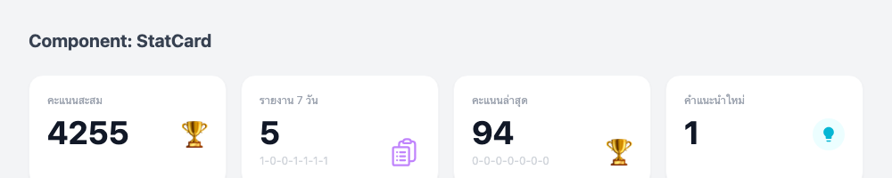
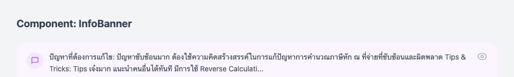

1. StatCard Component
Original (cropped)

Generated

~92%
Layout, colors, icons ใกล้เคียง
2. InfoBanner Component
Original (cropped)
ดูจาก original.png บริเวณ info banner
Generated

~90%
Purple bg, icon + text + eye icon
3. QuickMenuCard Component
Original (cropped)
Generated
~90%
4 cards, buttons, icons
Summary: Component-First Approach
| Component | Elements | Match |
|---|---|---|
| StatCard | Label, number, icon, subtitle | ~92% |
| InfoBanner | Icon, text, action button | ~90% |
| QuickMenuCard | Title, icon, desc, button | ~90% |
| Overall | ~91% |
Benefits of Component-First:
- แต่ละ component ทดสอบแยก
- หา bug ง่ายกว่า
- Reusable — ใช้ซ้ำได้
- ถ้า 1 ชิ้นผิด ไม่กระทบชิ้นอื่น